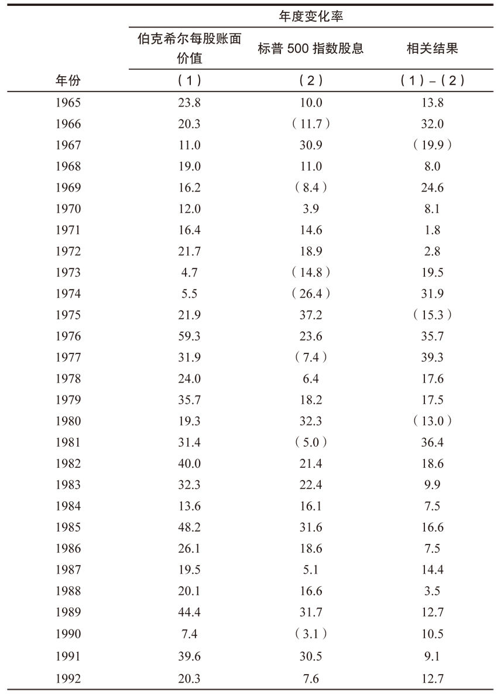
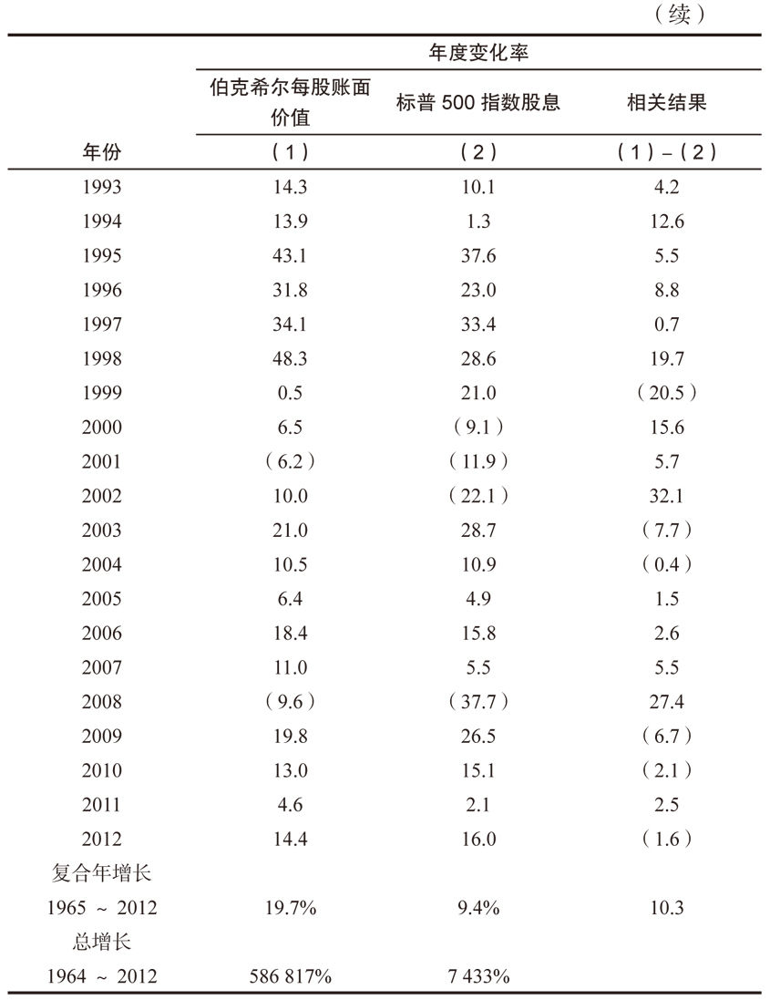

第8章 最伟大的投资家
第8章 最伟大的投资家
第8章 最伟大的投资家

巴菲特被称为世界上最伟大的投资家。他的伟大从何而来？人们为
何给他这样的赞誉？在我看来，这其中只需要看两个简单的变量：相对跑
赢大盘和持续时间。两者都需要。因为有无数人都在一段时间内跑赢过
大盘，但仅仅是短期跑赢大盘不算什么，只有能做到长期跑赢大盘，这
样的案例才有借鉴意义。
迈克尔·莫布森在他的《成功方程式》（2012年哈佛大学出版）一书
中，恰当地描述了在企业界、体育界和投资界中，对于运气和技能两种因
素的衡量，指出区别二者的方法是对结果的长期测量。运气或许在短期
内会扮演角色，但历史会告诉我们，技能最终起到至关重要的作用，在
这方面，巴菲特就是一个无与伦比的例子。
巴菲特管理资金的时间横跨60年之久，可以划分为两个时代：一是
1956~1969年管理巴菲特投资合伙企业时代；一是管理时间更久的伯克
希尔时代，始于1965年他接管该公司。
巴菲特开始他的合伙企业之初，年仅25岁，他只动用了很少的本金
（他自己的投资只有100美元）。尽管当时的目标是每年至少6%的回报，
但巴菲特自己设定了一个更高的目标：每年击败道琼斯指数10%。实际
上，他干得更好，1956~1969年，巴菲特的合伙企业年回报率达到29.5%，
比道琼斯指数高出22个百分点。在合伙企业成立之初，投入的每10000美
元，在其1969年结束之时，在扣除管理费之后，成长为150270美元。同
期，如果投到道琼斯指数上，将成长为15260美元。在上述期间，道琼斯
指数有五年回报为负数，但巴菲特从没在任何一年亏损过，而且每一年
都击败指数。
当年，几乎没有什么投资家可供巴菲特学习。20世纪60年代中期，
杰拉尔德·蔡（即传奇华人投资家蔡志勇）和弗雷德·卡尔，这两位最为著
名的基金经理正处于辉煌年代，而此时巴菲特已经在考虑关闭合伙企业
了。上述两位著名的投资家通过投资热门股而成名，也因热门股的崩塌
而毁掉了一世英名。
卡罗尔·卢米斯早期发表在《财富》杂志的一篇题为“无人企及的琼
斯”的文章中，将巴菲特的业绩与著名的对冲基金经理阿尔弗雷德·温斯
洛·琼斯进行比较，当时，琼斯有10年的投资记录，而巴菲特只有9年的
记录。以5年为期，比较的结果是巴菲特获胜，击败琼斯334%~325%。但
卡罗尔指出，巴菲特不久就关闭了他的合伙企业，而琼斯与那些没有预
见到股市严重高估的人们一起在苦海中沉浮。
即便抛开巴菲特早期合伙企业阶段不可思议的优秀投资记录，他
在伯克希尔期间取得的巨大成功，也无愧于世界上最伟大的投资家称
号，参见表8-1。1965~2012年，伯克希尔的每股账面价值从19美元上升到
114214美元，年回报率达到19.70%。相应地，标普500指数（包括分红在
内）年回报率为9.4%。在这48年里标普500指数有11年亏损纪录，几乎占
到1/5的年头，伯克希尔仅有两年为负。
表8-1 伯克希尔公司回报率与标普500指数对比


看着这些长期持续超级表现的数字，毋庸置疑，巴菲特是世界上最
伟大的投资家。但这些数字背后的巴菲特是怎样一个人呢？
私下里的巴菲特
巴菲特从艾森豪威尔总统时代开始其投资生涯，持续六十年而长盛
不衰，我们该如何看待这样一个传奇人物？
在童年时代，巴菲特就对每个人宣称自己在30岁之前会成为百万富
翁，如果做不到就从奥马哈最高的楼上跳下去。当然，关于跳楼的部分是
开玩笑，甚至他是否成为百万富翁也没有人当真。今天，他的成就远远超
出年轻时的目标，但熟悉他的人都知道，巴菲特根本不在意什么亿万富
翁的生活方式。他仍然住在1958年在奥马哈买的老房子里，开着老款的
美国车，喜欢吉士汉堡、可乐、冰激凌等花样美食，他唯一的癖好是他
喜欢的私人喷气飞机。他说：“并不是我喜欢钱，而是我喜欢看着它们
增长。” [1] 在第1章，我们知道他将钱回馈给社会时，自己也享受着巨大
的快乐。
现今社会，当爱国主义经常被认为是陈词滥调时，巴菲特却在美利
坚高高擎起这杆大旗。他毫不掩饰地指出，美国这片土地给任何愿意打
拼的人们，提供了众多的成功机会，他总是以乐观、积极、向上的态度
看待这一切。一般认为，人在年轻的时候容易乐观，随着年龄渐长，悲
观主义渐渐抬头，但巴菲特似乎是个例外。我想部分原因是他在经历了
六十年的风风雨雨、各种创伤与阵痛之后，最终看到的是市场、经济、
国家终将复苏和持续向前发展。
用谷歌搜索一下20世纪50年代、60年代、70年代、80年代、90年代，以
及21世纪的第一个十年，看看发生过的重大事件，有太多的事件载入史
册，特别重大的包括核战争边缘政策、刺杀总统或总统辞职、国内骚动
和暴乱、地区战争、石油危机、恶性通货膨胀、两位数的利率、恐怖袭击
等，更不要说时不时的经济衰退以及周期性的股市崩盘。
当被问及，如何在动荡不安的股市大海上航行时，巴菲特以一贯的
平易近人的口吻说：我只是“在别人恐惧时贪婪，在别人贪婪时恐惧而
已”。但我认为这背后有着更多故事，巴菲特具有了历经千锤百炼的技
能，使他不仅能在危机之时生存下来，也能在艰难时期积极进取、大举投
资。
巴菲特优势
多年以来，学者们和投资界人士一直在争论市场有效理论的正确
性。如同你在第6章所看到的，这个具有争议的理论认为，市场的股价已
经反映了所有可获得的信息，所以分析股票是徒劳无益、浪费时间的。在
这个意义上说，市场已经做了所有你需要的调研工作。那些坚持认为该
理论正确的人，会半开玩笑地说，投资人随手往行情表上扔出一个飞
镖，据此作出的投资决策，与那些花数小时仔细阅读年报、季报，经验
丰富的金融分师相比，拥有同样的胜算。
然而，那些持续击败市场指数的投资家的成功——尤以巴菲特最为
突出，说明市场有效理论存在漏洞。包括巴菲特在内的人认为，大多数
基金经理跑输大势的原因，并非因为市场是有效的，而是他们的投资方
法不完善。
管理咨询顾问们相信成功企业具有三个明显的优势：行为优势、
分析优势、组织优势。 [2] 研究巴菲特的行为，我们可以看看这三个因
素是如何作用的。
行为优势
巴菲特告诉我们成功的投资不要求有高智商，或在商学院接受高等
教育。最为重要的是性格，当他谈到性格时指的是理性。理性的基石就是
回望过去、总结现在，分析若干可能情况，最终做出抉择的能力。简而言
之，沃伦·巴菲特就是这样做的。
那些了解巴菲特的人都认为，是理性令其与众不同。芒格说：“在
我哈佛法学院的班上，有数以千计的同学，我熟悉所有的尖子生，但他们
中没有一个能像巴菲特那样，大脑如同超级理性的机器。” [3] 与巴菲特
相熟50多年的《财富》杂志的卡罗尔·卢米斯也相信，理性是巴菲特投资
过程中最为重要的特点。 [4] 《巴菲特：一个美国资本家的成长》一书的
作者洛温斯坦说：“巴菲特的天分体现在耐心、自律和理性。” [5]
作为伯克希尔董事的比尔·盖茨，也同样认为理性是巴菲特最为突出
的特征。他们两人曾花一下午时间，在西雅图的华盛顿大学礼堂里，回
答学生们的提问。第一个学生的问题是：“你如何成为今天的样子？你怎
么变得比上帝还富有？”巴菲特深吸了一口气，开始回答：
“在我的例子中，如何变成今天这个样子实际上非常简单。这与IQ
无关，我肯定你们听了会很高兴。最重要的是理性。我总是将IQ或天赋
视为电机的马力，但是动力的输出——也就是马达的效率——却依赖于
理性。很多人拥有400马力的电机，但是只有100马力的输出功率，这还不
如只有200马力的电机全数输出的效率。”
“那么，为什么聪明人没有发挥出上天赋予的能力？这与一个人的习
惯、特质、性格以及如何行为的理性方式有关，不是你任性的行为方
式。正如我曾说过的那样，每个人都能做到我做过的事情，并可能做得
更好，但有些人成功了，而另一些人失败了。那些人之所以失败，是因为
他们一意孤行，不是因为这个世界不给你机会。” [6]
所有认识巴菲特的人都认为，巴菲特的驱动力是理性。他投资的策
略就是理性配置资本。决定如何配置公司的盈利是管理层最为重要的决
策；决定如何配置自己的资金是一个投资人最为重要的决策。在决策时
运用理性思维是巴菲特最为欣赏的特质。尽管有各种变量存在，但金融
市场上始终有一条理性之线贯穿其中，巴菲特的成功就是这条理性之线
的结果，从未偏离。
分析优势
当巴菲特投资时，他看的是企业，而大部分投资人看的是股价，他
们花很多时间关注股价、预测股价走势，却很少花时间了解他们部分拥
有企业的基本面，这就是巴菲特与众不同的根源所在。
拥有和运作一家企业，给了他独特的优势去分析思考，他经历过企
业的成功和失败，并将经验运用在股票市场上。大多数职业投资人没有
实业方面的经验。当他们积极学习CAPM（资本定价模型）、贝塔系数、
现代投资理论时，巴菲特在研究损益表、资本再投资要求、公司产生现
金能力。巴菲特问：“你能向一条鱼解释在陆地上行走的感觉么？这或许
需要一千年的时间，管理企业也一样。” [7]
巴菲特认为，投资者与企业家应该用同样的方式看待企业，因为
他们想要的是同一样东西。企业家想买的是全部，而投资者买的是部分。
如果你问一个企业家在购买一家企业时如何考虑，他们可能会说：“它
能产生多少现金？”金融理论表明，长期而言，公司的价值与其产生现金
的能力呈正相关的线性关系。因此，为了获取利润，企业家和投资人都
应该关注同样的变量因素。
巴菲特说：“我们的观点是，学投资的人只需要学好两门课程：如何
估值企业、如何对待股价。” [8]
记住，股市常常躁狂抑郁，有时会对于未来的前景欣喜若狂，有时会
莫名其妙的低落。当然，这也创造了机会，特别是当杰出公司的股价出乎
意料的低下之时。如果你不受那些具有躁狂抑郁症倾向的股评家的影
响，也不被市场牵着鼻子走，这时市场将不再是你的导师，而仅仅是帮
助你买卖股票的工具。如果你相信市场比你更聪明，就全部买指数基金。
但如果你对自己有信心，那么自己做分析研究企业，别理会股市涨跌。
巴菲特不会粘着电脑，不会盯着屏幕上的涨涨跌跌，没有电脑似乎
过得不错。如果你打算拥有一个杰出的企业数年之久，那么股市上每天
价格的波动无关紧要。你会惊喜地发现，即便你没有时时刻刻盯着股市
行情，你的组合却也表现不错。如果你不相信，就试一试，先试试48小
时不看行情，不要看电脑、手机、报纸、电视、广播上任何关于股价的
信息，如果两天之后，你持有的公司无恙，请接着试一试三天，然后一个
星期。很快，你就会相信，在没有盯着股价的情况下，你的投资很健康，持
有的公司也运作良好。
巴菲特说：“我们买了股票之后，即便股市关闭一两年，我们也不会
担心。例如我们拥有100%股权的喜诗糖果，我们根本不需要每天有什么
报价来证明我们干得好不好。同样的道理，为什么我们需要给可口可乐
每天报价呢？” [9] 很清楚，巴菲特告诉我们，他不需要股价来证明伯克
希尔的投资是否成功，对于个人投资者也一样。当你关注股市时，只要
想着：“近来是否有愚蠢的家伙给我提供了低价买入好公司的机会？”如
果是这样，你的水平就和巴菲特差不多了。
就像人们毫无意义地浪费了很多时间担心股市一样，他们同样根
本不必担心宏观经济。如果你发现自己在讨论经济是否蓄势待发或可
能衰退、利率是否上调或下降、是否有通货膨胀或通货紧缩，停下来歇
会儿。巴菲特会偶尔关注一下经济大势，但他不会花大量的时间、精力
分析预测宏观经济前景。
通常投资者以分析经济大势为开始，然后根据这个假设，再挑选合
适的股票以配合其宏伟巧妙的设想。巴菲特认为这种思维很荒诞。
首先，没有人能预测经济，就像没有人能预测股市一样。其次，如
果你只是挑选那些在特定经济条件下才能获利的股票，那么你就不可避
免地卷入了投机。无论你是否准确地预测了经济大势，你都需要不断调
整组合，以便从下一次经济周期中获利。巴菲特倾向于购买那些在任何
经济环境下均能获利的企业。当然，宏观经济环境会影响公司的利润
率，但无论经济环境如何变化，最终，巴菲特型的企业都能获利良好。相
对于那些仅能在预测准确的情况下才能获利的股票，时间是优秀企业的
好朋友。
组织优势
1944年的英国伦敦，在一栋历经纳粹德国大轰炸后幸存的大厦里，
温斯顿·丘吉尔发表下议院演说：“我们塑造建筑，建筑也塑造了我
们。”这段演讲后来被一代又一代的建筑学家们所热爱，它也能帮助我
们理解伯克希尔的形态以及它的构建者。我们剖析巴菲特的优势，有助
于对他所创建的公司的组织结构加深了解。
当巴菲特最早以7美元/股买入伯克希尔的股票时，我不能肯定他是
否预见了半个世纪之后的今天。但正如丘吉尔所言，公司的确反映了它
的建设者的特征，伯克希尔也拥有了巴菲特的深深烙印。
伯克希尔的成功基于三个支柱：
首先，公司的各个子公司产生大量的现金流，向上供给奥马哈总部。
这些现金来源于公司旗下巨大的保险业务运作的浮存金，以及那些全资
拥有的非金融子公司的运营盈利。
其次，巴菲特作为资本的配置者，将这些现金进行再投资，投资于
那些能产生更多现金的机会。于是更多的现金反过来给了他更多的再投
资的可能，如此循环往复。你一定能想象这样的画面。
最后一个支柱是去中心化。每一个子公司都有各自富有才华的管理
团队负责日常工作，不需要巴菲特操心。这背后的益处在于，可以让巴菲
特集中100%的精力，专注于资本配置的工作，这正是他天才所在之处。
巴菲特的管理宣言可以总结为：“聘请最好的管理团队，别再为管理操
心。”今天，伯克希尔旗下拥有80多个子公司，超过27万名员工，但公司总
部仅有23名员工。
伯克希尔-哈撒韦公司的组织结构比单一公司结构更有力。《局外
人：八个非传统的CEO和他们的成功理性蓝图》的作者威廉·桑代克指
出：“巴菲特发展了一种世界观，它的核心着重于建立与优秀的人与企
业的长期联系，避免不必要的频繁换手，以免打断复利增长的节奏，这对
于价值的创造至关重要。” [10]
桑代克相信，巴菲特像一个“以减少频繁交易为主要目标的经理人、
投资者、哲学家的合体。” [11] 为什么？因为频繁换手存在成本，我不仅仅
是说交易成本和资本利得税。在巴菲特心里，换手成本更多地与人性有
关。如果你集合了最好的企业，拥有最好的管理层，由最好的股东提供
融资，接下来应该是一段长期复利增长的美好旅程，为什么还要打断这
个各种强有力因素结合在一起的价值创造的过程呢？
学会像巴菲特一样思考
过去20多年，我写作并四处宣扬巴菲特及其无与伦比的成功，我经
常听到的一种说法是：“好吧，如果我也像他一样拥有亿万美元，我也能
像他一样在股市上赚很多钱。”我一直没有明白这种说法，照这个说法
的逻辑，在你拥有致富的才能之前你必须先有钱。是这样吗？但我必
须提醒读者，巴菲特在赚取亿万美元之前，就总结出了一套合适于自己
的投资方式。
我将尽可能说服你，根据你自己的财务状况，如果能将他的投资准
则，整合进你的思考投资决策体系里，也可以取得巴菲特式的成功。我
虽然不能保证，如果你以100美元起步，很多年之后也会拥有亿万美元，
但我敢肯定，与那些和你拥有同样财务资源的人相比，如果他们更多依
赖的是飘忽不定的投机计划，你一定会干得更好。
让我们假设一个情景，一步一步来。
让我们假设，你必须做出一个很重要的投资决策，明天你将有一个
机会挑选一家企业（仅仅一家）去投资，为了增加趣味，让我们假设，
一旦你做出决定就不能动摇，你必须持有十年之久。最后，从该企业获
得的利润将支持你的退休生活。现在，你应作何考虑？
企业准则
企业是否简单易懂
太多的人买一只股票，却不了解其销售、成本、产品利润等。除非你
对于所投资的企业非常了解，熟悉它们的运营模式，否则不可能预见它
们的未来。如果你能了解这些经营环节，就可以继续推进你的调研工作
了。
企业是否有持续的经营历史
如果想将家庭的未来投资到一个公司里，你必须思考这家公司是否
能经受得住时间的考验。你不太可能将未来押在一家没有历史、没有经
过经济周期考验、没有竞争优势的新公司身上。你应该确认所投资的公
司在过去的长时间里，展示了它强有力的盈利能力。
企业是否有良好的长期前景
最佳的企业是拥有长远靓丽前景的企业，也就是巴菲特所说的拥
有“特许经营权”的企业。特许型企业的产品或服务是被需要、被渴望、
无可替代的，其利润不会受到侵害。通常，这样的企业拥有商誉，能很好
地抵御通货膨胀的影响。最糟糕的企业是生产普通型商品的企业，普
通型企业的产品或服务与其竞争对手没有区别，这类企业极少拥有商
誉，它们唯一的竞争武器就是打价格战。普通商品型企业的困难在于，
它们以杀价为武器的同行经常会低于成本倾销产品，以吸引顾客，希望
留住他们。如果你与低于成本销售的企业竞争，将会厄运连连。
一般而言，大多数企业介于“弱特许”和“强普通”之间。一个弱的特
许经营型企业的长远前景要优于一个强的普通型企业。即便一个弱的
特许型企业仍然可以具有价格优势，让它赚取超出平均水平的投资回
报。相反，一个强的普通型企业，只有在其供应商提供低成本的基础
上，才能获得超出平均的回报。拥有特许型企业的一个优势在于，即便
遇到无能的管理层，它仍然能生存，而普通型企业遇到这种情况将会致
命。
管理准则
管理层是否理性
你无需盯着股市或宏观经济大势，取而代之的是关注你的现金。公
司管理层如何将盈利再投资，将决定你是否能取得足够的回报。密切
关注管理层的行为，如果企业产生的现金多于其维持运转所需，这就是
你想要的企业。一个理性的管理层只会将钱投资于那些产出更高回报
的项目上，如果找不到回报大于成本的项目，理性的管理层会将资金还
给股东，通过提高分红或回购股份的形式。非理性的管理层则四处寻找
花钱之道，而不考虑将多余的资金还给投资人，他们最终会陷入低效投
资的陷阱来。
管理层对股东是否坦诚
尽管你可能没有机会与公司CEO面对面谈话，但你可以通过他们
与股东的交流得到相关信息。公司管理层是否以一种你能明白的方式，
报告每一个部门的运营情况？他们是否开诚布公地面对失败，就像宣扬
成功一样？最为重要的是，管理层是否公开承诺，公司的重要目标是将
股东利益最大化？
管理层能否抗拒惯性驱使
有一种看不见的力量会使管理层陷入非理性行动，并置股东利益
于不顾，这种力量就是惯性驱使。像旅鼠一样随大流，他们的行为逻辑
就是觉得大家都这么干，一定是对的。对于管理层竞争力的一个衡量标
准就是，他们能否独立思考，避免从众效应。
财务准则
重视净资产回报率，而不是每股盈利
大多数投资人通过每股盈利来判断公司的年度表现，看看是不是
相对于上一年度有了很大提升或创下新的纪录。但因为公司通常会留
存前一年度的部分或全部利润，这就增加了公司的运营资本基数，自然
就会提高每股盈利（在股本不变的情况下），因此仅仅看其盈利增长意义
不大。当公司宣称“每股盈利创下新高”时，股东们可能会被误导，相信
管理层一直干得不错。考虑到公司年复一年资本基础的增加，真正的衡
量年度表现的方式是，净资产回报率——运营利润与股东权益之比。
计算真正的“股东盈余”
一个企业产生现金的能力决定了它的价值。巴菲特寻找那些产生
现金多于消耗现金的企业。当确定一个企业的价值时，你要明白并非
所有盈利都是平等创造的。那些要求大量固定资产才能产生利润的公
司，通常会保留大部分的利润，作为专项拨款，去升级生产设备，以维
持其竞争力。因此，会计盈余需要进行调整，以反映企业产生现金的真正
能力。
对此，巴菲特提出了一个更为准确的词语——“股东盈余”。确定股
东盈余的方法是，在净利润基础上，加上折旧、损耗和摊销，减去资本支
出。这些资本支出是为了维持公司竞争优势和产量而发生的。
寻找具有高利润率的企业
高利润率不仅反映公司管理层的能力，也反映了其控制成本的顽强
精神。巴菲特喜欢那些注重成本控制的经理，憎恨那些放任成本上升的
经理。股东们间接地拥有公司利润，每一美元的浪费都会损害公司一美
元的利润。多年以来，巴菲特观察到，那些高成本运营的公司总是会有
理由保持或增加运营成本，而控制成本良好的企业总能发现方法去削减
成本。
每一美元的留存利润，至少创造一美元的市值
这是一个快速衡量指标，它能告诉你的，不仅是公司的力量，而且
是管理层配置资源的能力。在公司的净利润中，减去分红，余下的作为
公司留存利润。现在，将公司过去十年的留存盈余加起来。接下来，算一
算，公司目前的总市值与十年前的总市值之差。如果公司没有有效地使
用留存盈利，市场最终会给出一个更低的标价。如果公司市值的上升少
于公司留存的利润，说明公司倒退了。如果公司能善用留存利润，获得
超出平均水平的回报，那么公司市值的上升将会多于留存的利润总
额。这样，每一美元的留存就创造出了多于一美元的市值。
市场准则
什么是企业价值
企业的价值是它预期未来生命存续期内产生的现金流，在一个合理
利率上的折现。一个企业的现金流是公司的股东盈余。通过长期的测
量，你会明白它们是长期稳定的增长，还是仅仅围绕一个数值上下波
动。
如果一个公司的盈利是上下波动的，就用长期利率去贴现这些利
润。如果股东盈余显示一个可预期的成长率，就用成长率作为贴现率。
如果对于公司长期未来的成长过于乐观，使用保守的估计比过于热情
的膨胀估值更有利。巴菲特使用美国政府长期国债的利率作为贴现率，
他不会在上面再加上风险溢价，但如果利率下调，他会提高贴现率。
相对于公司的价值，能否以折扣价格购买到
一旦你确定了公司的价值，下一步就看看市场价格。巴菲特的标准
是，用比价值低得多的价格买到。注意：只有在这最后一步，巴菲特才看
股市行情。
巴菲特投资方法12准则
企业准则
企业是否简单易懂？
企业是否有持续稳定的经营历史？
企业是否有良好的长期前景？
管理准则
管理层是否理性？
管理层对股东是否坦诚？
管理层能否抗拒惯性驱使？
财务准则
重视净资产回报率，而不是每股盈利。
计算真正的“股东盈余”。
寻找具有高利润率的企业。
每一美元的留存利润，至少创造一美元的市值。
市场准则
必须确定企业的市场价值。
相对于企业的市场价值，能否以折扣价格购买到？
计算一个企业的价值在数学上并不复杂。但是，错误地分析公司未
来的现金流却会有大麻烦。对此，巴菲特有两个方法应对：首先，他通
过选择那些业务简单易懂、特点稳定的企业，以提高他的预测的准确
性；其次，他坚持每一个投资的对象，都具有安全边际，就是买价低于其
内在价值。这个安全边际创造了一个提供保护的缓冲，以对应公司未来
现金流的变数。
现在，你已经是一家企业的主人，而不再是一个炒股者，你已经做好
理论上的准备，将组合从一只股票扩张到几只。由于你不再用股价的变
化或年度变化来衡量你的成绩，你现在有了挑选最佳企业的自由。没有
什么法规，规定你必须挑选每一个行业进入你的组合里，没有谁强制你
必须挑选40、50、60或100只股票以达到所谓的“多元化”。
对于“多元化能降低风险”的说法，巴菲特相信，只有那些不了解自
己在做什么的人，才需要广泛的多元化。如果他们对于自己的持股一无
所知，他们的确应该购买很多不同的股票，且分不同的时间买进。换言
之，这种人应该投资于指数基金，或使用成本均摊法投资。投资指数基
金没什么不好意思的，实际上，巴菲特指出，指数基金比绝大多数职业投
资人干得更好。他说：“实际上，当‘傻钱’意识到自己的能力圈范围时，
它便不再是‘傻钱’。” [12]
巴菲特指出：“在另一方面，如果你不是那种一无所知的投资者，那
么，研究一些企业，发现五到十个拥有长期竞争力、价格合理的公司足
矣，传统的所谓的多元化理论对你而言，毫无意义。” [13] 巴菲特令你思
考一个问题：如果你当下拥有的最好的企业，具有最低的财务风险、
最优的长期前景，为何你还要投资在其他排名其后的公司，而不投资在
最佳的选择上呢？
现在，重新回到你理论上的投资组合，现在已经不是一只股票了。你
可以计算它们的投资盈余，就像巴菲特一样。将每股利润乘以你所持有
的股数，算一下总体的盈利水平。作为企业的主人，巴菲特解释说，其目
标是十年或更久之后，让旗下的企业产生最佳的透视盈余。
由于投资盈余的成长成为首要的考虑，而不是股价，很多事情开始
变化。首先，你不太可能因为股价上涨的蝇头小利而出售你最好的企
业。讽刺的是，公司管理层在他们专注于公司运营时是懂得这个道理
的，巴菲特解释：“一个拥有前景超级棒的下属公司的母公司，是不可能
卖掉它优秀的全资子公司的，无论什么价格。” [14] 一个想提升企业价值
的CEO是不会卖掉皇冠上的钻石的，同样他也不会卖掉投资组合中最好
的股票，仅仅因为想立刻变现。“在我们看来，处理企业层面合理的方
式，在股票上同样合理。一个投资者即便只持有一家杰出公司的一小部
分股票，也应该像拥有全部股份的企业主一样具有坚韧的精神境界。”
[15]
现在，考虑管理你的组合，不仅是避免卖掉你最好的企业，还要考
虑认真挑选更多的新投资。在这个过程中，不要仅仅因为拥有多余的现
金，就随便出手。如果预选对象没有通过你的准则测试，不要出手，耐心
等待机会的出现。不出手，不代表你停止工作和思考。巴菲特认为，一
个人在一生中很难做出数以百计的正确决策，只要做出为数不多的智慧
决策就已经足够了。
发现你自己的道路
乔治·约翰逊在他的书《心中的火焰》中写道：“在现实和虚幻之间，
每个人的内心深处都想发现一种模式，以整合无序的世界。” [16] 这揭示
了所有投资者都面临的两难处境。约翰逊相信：心灵渴望找到模式，模式
能帮助我们得到有序，让我们去规划和使用好自己已有的资源。
我们知道巴菲特一直在不断地寻找模式，在分析企业时，他知道这
些企业的经营模式能揭示未来股价的模式。股价虽然不会跟随企业的每
一次变化而做出及时的反应，但是假以时日，股价的变化模式终将与企
业基本面的模式相一致。
太多的投资人在错误的地方寻找模式，他们固执地认为一定有可以
预测短期股价涨跌的模式存在，但他们错了，预测股市变化的模式根本
不存在，一模一样的模式不会重复出现。但仍有人乐此不疲。
在没有预测模式的情况下，投资人该如何做呢？答案是在合适的地
方寻找合适的层面。尽管整个经济、整个市场太复杂、太大，难以预
测，但在公司层面寻找可预测的模式还是有迹可循的。在每一个公司
里，都存在着运营模式、管理模式和财务模式。
如果你仔细研究这些模式，在绝大多数情况下，你会对于公司的未
来得出合理的预期。巴菲特专注于这些模式，而不关心股市中数以百万
计的股民们无法预测的行为模式。他说：“我发现，分析公司的基本面
比分析市场的人心要容易得多。” [17]
有一点是可以肯定的，知识性的工作能提升投资回报和降低风险。
我们发现，知识可以用于区分投资和投机。最终，了解你的公司越多，
思想和行为中的纯粹的投机因素就越少。
财经作家罗恩·切尔诺夫说：“金融体系是整个社会价值的反映。”
[18] 我认为这非常正确。长久以来，人们将自己的价值观放错了地方，所
以股市屈从于投机的力量。久而久之，人们改变了自己，在财务道路上陷
入灾难性的陋习。摆脱这种恶性循环的唯一方法就是教育自己哪些是
可行的，哪些是不可行的。
巴菲特在过去有过失误，毫无疑问，在未来依然有可能还会有失
误。但是投资成功不意味着没有失误，它来自于正确多于错误。《巴菲
特的道路》这本书也不例外，它告诉你如何减少那些困扰了很多人的、错
误的行为，例如预测市场、经济、股价等，它也告诉你如何抓住正确
的、应该做的一些简单的事情，例如企业估值。巴菲特投资时，仅考虑
两个变量：企业的价格和价值。企业的价格可以在行情中查到，决定价
值需要进行一些计算，但这些计算并不复杂，只要愿意，谁都可以做得
到。
因为你不再担心股市、经济大势或预测股价，现在你可以花更多时
间了解你的企业。花越多时间阅读公司年报和行业的相关报道，你越会
变成企业主一样的行业专家。实际上，你自己花在调查研究上的时间越
多，对于股评家的依赖就越少，从而减少不理性的行为。
最终，最好的投资来源于你自己的发现。然而，你不用感到恐惧，
《巴菲特之道》这本书非常通俗易懂，你无需拥有商学院MBA的学位就
能知道如何使用它。如果你仍然不知道如何使用其中提到的一些投资准
则，可以咨询你的投资顾问。实际上，当你开始越来越多地了解价格和
价值的时候，就会越来越多地理解和受益于《巴菲特之道》这本书。
在巴菲特的职业生涯中，他尝试了不同的投资方法，年轻时，他画
过股票K线图；他受教于金融界最伟大的导师——本杰明·格雷厄姆，学
会了证券分析；他很早受益于菲利普·费雪的投资策略；他有幸与查理·芒
格成为合作伙伴，将其所学付诸实施。在其六十年的职业生涯中，遇到过
无数的经济灾难、政治变动、军事变动等挑战，历经了这些纷乱，他发
现了自己人生的一方天地，在那里投资策略与人性相一致。他说：“我们
的态度就是，让我们的个性与我们希望的生活方式相一致。” [19]
在巴菲特的态度中，很容易发现这种和谐，他总是乐观、稳健，每
一天都神采奕奕地去上班。他说：“我拥有我想要的生活，我热爱每一
天。我的意思是，我每天都跳着舞去上班，与那些我喜欢的人一起工作。”
[20] 他继续说道：“这世界上没有什么比得上我在伯克希尔工作更有乐
趣，很幸运我在这里。” [21]
[1] Roger Lowenstein,Buffett:The Making of an American Capitalist（New
York:Random House,1995）,20.
[2] John Pratt and Richard Zeckhauser,eds.,Principals and Agents:The
Structure ofBusiness（Boston:Harvard Business School Press,1985）.
[3] Carol Loomis,Tap Dancing to Work:Warren Buffett on Practically
Everything,1966-2012（New York:Time Inc.,2012）,101.
[4] Conversation with Carol Loomis.February 2012.
[5] Lowenstein,Buffett.
[6] Loomis,Tap Dancing to WorK,134.
[7] Carol Loomis,"Inside Story of Warren Buffett,"FortuneApril
11,1988,34.
[8] Berkshire Hathaway Annual Report,1996,16.
[9] Berkshire Hathaway Annual Report,1993,15.
[10] William N.Thorndike Jr.,The Outsiders:Eight Unconventional CEOs and Their Radicalty Raiionat Blueprintfor Success （Boston:Harvard
Business Review Press,2012）,194.
[11] Ibid.
[12] Berkshire Hathaway Annual Report,1933,16.
[13] Ibid.
[14] Ibid.,14.
[15] Ibid.
[16] George Johnson,Fire in the Mind:Science.,Faith,and the Search for
Order（New York:Vintage Books,1995）,104.
[17] Andrew Kilpatrick,Of Permanent Value:The Story of Warren
Buffett（Birmingham,AL:APKE,1998）,794.
[18] Ron Chernow.The Death of the Banker:The Decline and Fall of the
Great FinancialDynasties and the Triumph of Small Investors （New
York:Vintage Books,1997）.
[19] Berkshire Hathaway Annual Report,1987,15.
[20] Robert Lenzner,"Warren Buffett'sIdea of Heaven:‘I Don't Have to
Work with People I Don't Like."'Forbes,October 18,1993,40.
[21] Berkshire Hathaway Annual Report,1992,16.